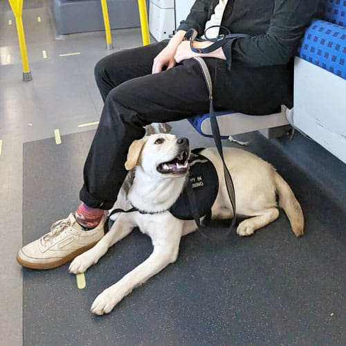

Ontario has laws and standards that are intended to make the province more inclusive by helping to reduce and remove the barriers you may face in everyday life. Learn about accessibility requirements, review accessibility standards and find resources.
If you have a guide dog or other service animal, they must be allowed to stay with you when you receive services in:
If your guide dog/service animal does not wear a vest or harness, you can show documentation from one of these regulated health professionals:
In some cases, the law does not allow service animals.
Learn more about the accessible customer service standard.

Photo Credit to: Kingston Service Dogs
According to the AODA’s Customer Service Standards one of two conditions must apply for your animal to be considered a service animal:
Service animals are not pets. Additional fees or requirements that apply to pets do not apply to service animals.
Website Created by Saxon Murphy